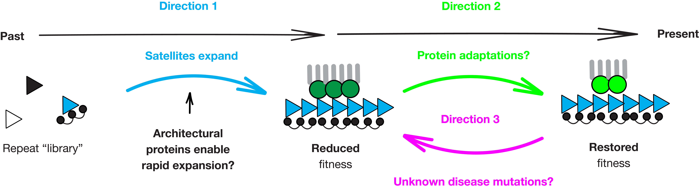

Lab Vision
Rapid evolution of chromosome segregation — from molecular mechanisms to health implications.
The Big Question
Chromosome mis-segregation leads to infertility, congenital diseases, and cancer. Paradoxically, the chromosome segregation machinery evolves faster than most cellular components. We aim to define the origin of that rapid evolution and the mechanisms that maintain segregation fidelity.
Research Directions

Functional Constraints of Centromeric DNA Evolution
Centromeric satellites occupy 6.2% of the human genome and can differ 37-fold between individuals. Despite mounting evidence that this variation is deleterious — linked to Down syndrome and poor cancer prognosis — the functional constrains of this divergence remain unclear.
We discovered that two recently emerged mouse centromeric satellites have distinct DNA shapes (minor groove width) due to sequence divergence. Using hybrid mouse oocytes, we showed that the architectural protein HMGA1 recognizes DNA shape to package the musculus centromeric satellite — and that packaging failure disrupts chromosome segregation. We proposed a model: satellites whose DNA shapes can be recognized by available architectural proteins take advantage of these proteins to rapidly expand, contributing to the extraordinary satellite divergence (Dudka et al., Nature 2025).
Current work: We use mouse tissue culture cells as a model of satellite expansion, leveraging experimental evolution assays and digital droplet PCR to test the role of DNA packaging in satellite divergence.
Functional Impacts of Adaptive Protein Evolution
Our molecular evolution analyses reveal that ~30% of centromeric proteins evolve adaptively in rodents and primates. These adaptations occur in proteins with diverse functions: centromere assembly, microtubule attachment modulation, and stabilization of correct attachments (Dudka et al., Journal of Cell Biology 2023).
We test how these adaptations maintain faithful segregation by creating "mal-adapted" alleles using gene editing — swapping adaptively evolving regions between closely related rodent and primate species. Our work on CENP-T suggests that adaptive evolution modulates centromere protein function and is important for robust female gametogenesis (Dudka et al., Current Biology 2025).
Current work: We are systematically testing how adaptations in functionally distinct centromeric proteins regulate chromosome segregation and female fertility using cell lines and mouse models.
Health Implications of Mutations in Adaptive Sites
Chromosome mis-segregation underlies infertility, congenital diseases and cancer. The vast majority of missense mutations in centromeric proteins are variants of uncertain significance (VUS). Given that many of these mutations occur in adaptively evolving sites, we hypothesize that molecular evolution analyses can reveal new disease-associated mutations in patients, especially those suffering from infertility.
Current work: We aim to identify new disease mutations in centromeric proteins by intersecting molecular evolution analyses with known human mutations. We use gene editing in human cells and confocal microscopy to test the impact of these mutations on chromosome segregation.
Approaches
Computational Approaches
molecular evolution analyses, pathogenicity prediction testing
Molecular Biology and Genetics
gene editing in mouse and human cells, digital droplet PCR
Cell Biology
confocal microscopy, imaging of meiosis and mitosis, image analysis
Mouse Models
transgenic and hybrid mice, fertility assays, oocyte microinjection

Iacocca Hall, 111 Research Drive
Bethlehem, PA 18015